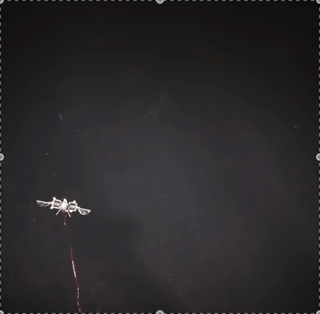
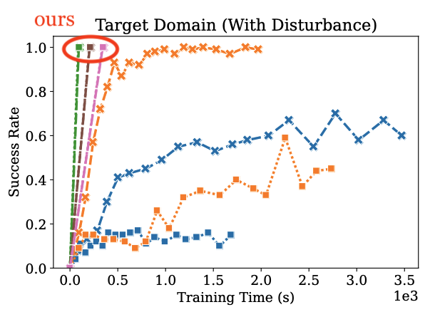
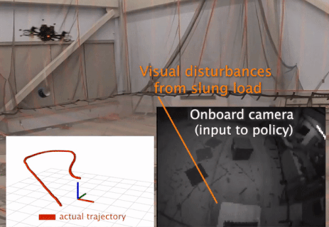
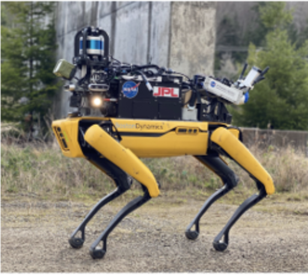
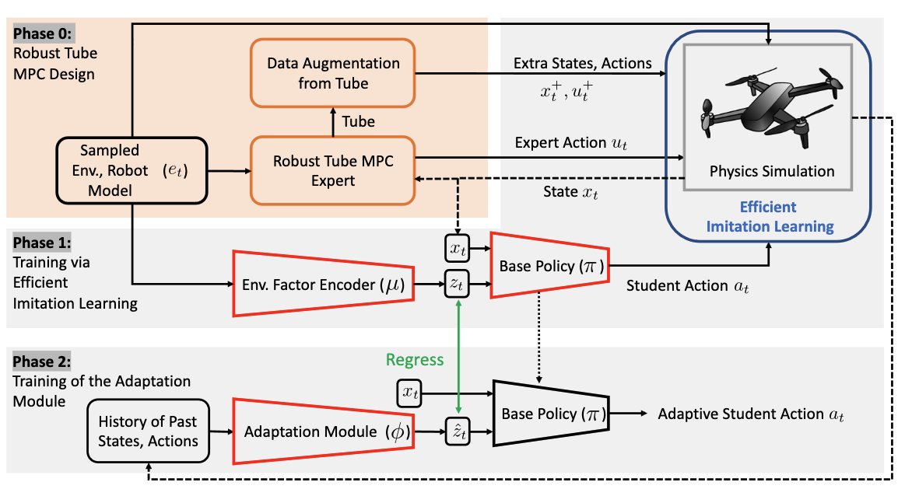
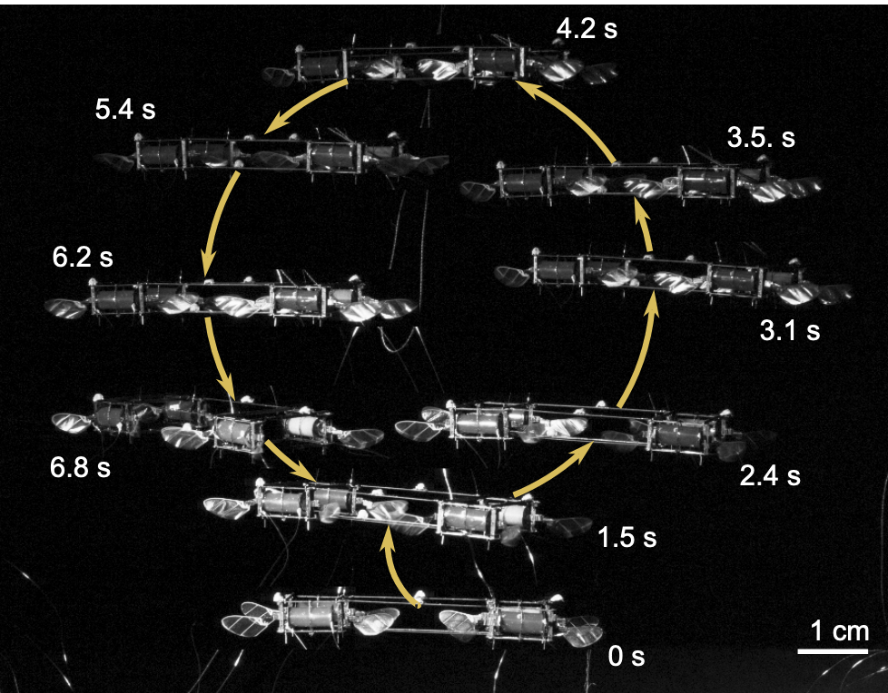
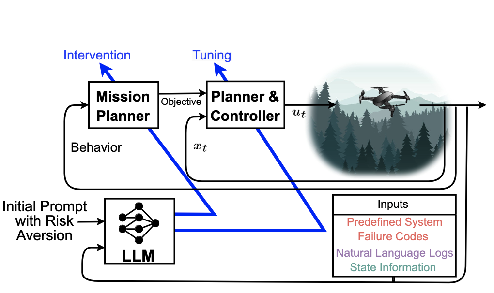
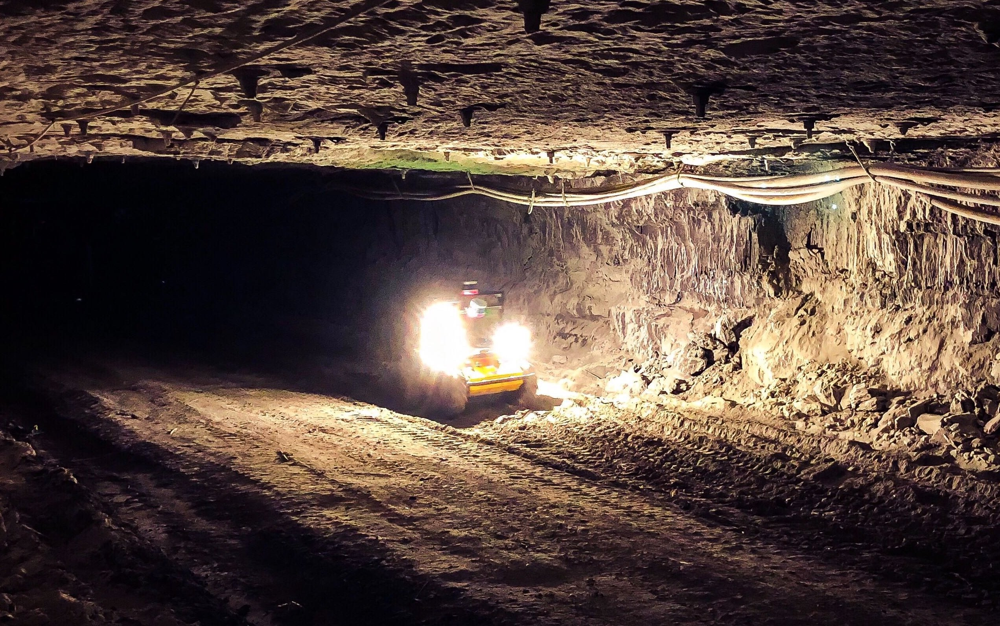
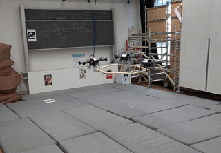
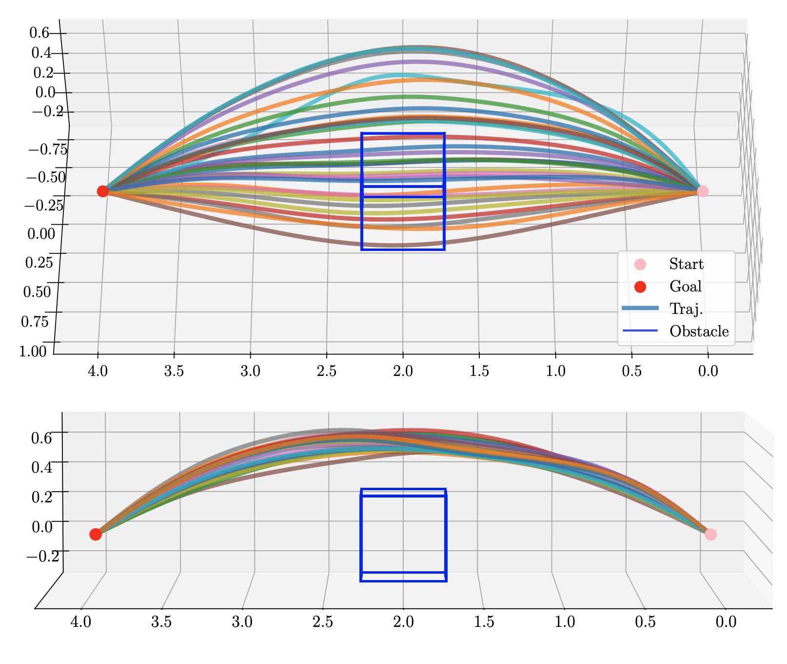

Andrea Tagliabue
I am an Applied Scientist working on robotic manipulation at Amazon Robotics, where I develop model-based and learning-based methods for perception, planning, and control in real-world systems.
I received my Ph.D. from LIDS at
MIT in 2024, focusing on imitation learning for robust, adaptive, agile sensing and control under uncertainty.
My research lies at the intersection of learning and control, spanning foundation models for robotics, data-efficient imitation and reinforcement learning, and learning-based model predictive control.
Prior to MIT, I was a robotics engineer affiliate at the
NASA Jet Propulsion Laboratory and
Caltech, contributing on state estimation for the
DARPA Subterranean Challenge.
I earned my M.S. in Robotics from ETH Zürich,
was a visiting researcher at UC Berkeley,
and received my B.S. in Automation Engineering from
Politecnico di Milano.
[andrea.tagliabue@me.com |
Linkedin |
Google Scholar]
|
|
Selected Publications
|
|

|
Aerobatic maneuvers in insect-scale flapping-wing aerial robots via deep-learned robust tube model predictive control
Yi-Hsuan Hsiao*, Andrea Tagliabue*, Owen Matteson*, et al.
Science Advances, 2025
(High impact factor jounral)
[paper | video]
|
|

|
Efficient Deep Learning of Robust Policies from MPC using Imitation and Tube-Guided Data Augmentation
Andrea Tagliabue, Jonathan P. How
IEEE Transactions on Robotics, 2024
[paper | video]
|
|

|
Tube-NeRF: Efficient Imitation Learning of Visuomotor Policies from MPC using Tube-Guided Data Augmentation and NeRFs
Andrea Tagliabue, Jonathan P. How
Robotics and Automation Letters (RA-L), 2024
[paper | video]
|
|

|
Nebula: Quest for robotic autonomy in challenging environments; team costar at the DARPA Subterranean Challenge
Ali Agha et al., Andrea Tagliabue
Journal of Field Robotics, 2022
[paper | videos | project webpage]
|
|

|
Rapid Imitation Learning of Robust Adaptive Trajectory Tracking Policies
Tong Zhao*, Andrea Tagliabue*, Jonathan P. How
IROS, 2023
[paper | video]
|
|

|
Robust, high-rate trajectory tracking on insect-scale soft-actuated aerial robots with deep-learned tube MPC
Andrea Tagliabue*, Yi-Hsuan Hsiao*, et al.
ICRA, 2023 (Awarded Finalist for the Best Paper in Dynamics and Control)
[paper | video]
|
|

|
REAL: Resilience and Adaptation using Large Language Models on Autonomous Aerial Robots
Andrea Tagliabue*, Kota Kondo*, Tong Zhao*, Mason Peterson*, Claudius T Tewari, Jonathan P. How
CoRL Workshop, 2023
[paper]
|
|

|
Lion: Lidar-inertial observability-aware navigator for vision-denied environments
Andrea Tagliabue*, Jesus Tordesillas*, Xiaoyi Cai*, et al.
ISER, 2021
(1st Place Urban Circuit, Darpa Subterranean Challenge)
[paper | video]
|
|

|
Robust Collaborative Object Transportation Using Multiple MAVs
Andrea Tagliabue*, Mina Kamel*, Roland Siegwart, Juan Nieto
International Journal of Robotics Research, 2019
[paper | video | video teaser]
|
|

|
CGD: Constraint-Guided Diffusion Policies for UAV Trajectory Planning
Kota Kondo, Andrea Tagliabue*, et al.
ArXiv, 2024
[paper]
|
In the News
1. MIT News (Dec 3, 2025), "MIT engineers design an aerial microrobot that can fly as fast as a bumblebee" - link.
2. NASA 360, "Shapeshifting Robots" - link.
3. CNN Business, "Shape-shifting robots could one day explore distant worlds." - link.
4. Vimeo NASA Robotics Showcase - link.
5. DARPA Subterranean Challenge / CoSTAR coverage (DARPA + NASA CoSTAR) - DARPA and CoSTAR.
6. ETH Zurich ASL News (Mar 2017), "The ASL and RSL showed an outstanding team performance at the MBZIRC Challenge in Abu Dhabi" - link.
|
Academic Service
Reviewer for CORL, L4DC, T-RO, RA-L, ICRA, IROS, CDC, Int. Journal Robust and Nonlinear Control.
|
Mentorship
I had the honor work work with several brilliant students, including:
Tong Zhao (M.S., MIT)
Owen Matteson (B.S., MIT)
Lucas Jia (M.S., MIT)
|
|
{kind=link}